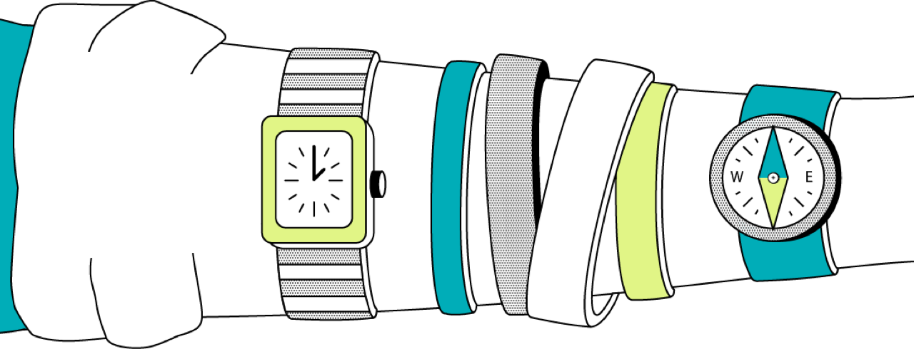

Wanna be our partner?
We provide high quality full life cycle recruitment services in the IT sector.
Our gang is here to help you!
Your buisiness is in the right hands
We specialise in programmers and IT talent. With extensive candidate market map and market knowledge, we aim to help companies recruit the right talent either in your office or working remotely.
Your career is in the right hands
We aim to help IT talents advancing their career and talent-ship. Our board of clients includes variety of national and international companies.
Punctuality
Introduce great and perfect results just in time
Experience
More than 30 projects completed and 150 candidates recruited
Individuality
We catch your ideas and help make them come true

Our Team
We provide high quality full-life cycle recruitment services in the IT Sector.
Oksana
Founder of WHH
Founder of WHH
She has a lot of experience in searching qualifying IT specialists. In love with IT, sport and life.
Svitlana
IT Recruiter
IT Recruiter
She is smart, young and enthusiastic. Loves sport and cool sense of humor.
Olena
IT Recruiter
IT Recruiter
Life-lover and just smart IT girl which helps to fit very challenging positions.
Diana
IT Recruiter
IT Recruiter